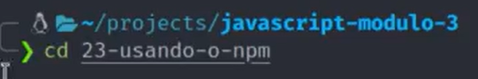
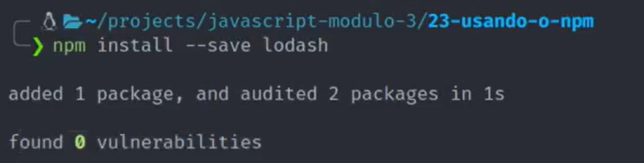

Módulos
CommonJS
Serve para organizar melhor os projetos e ter como fazer uma manutenção melhor. Ele não é suportado por padrão nos navegadores, no Node ele é a forma padrão.
Eu preciso primeiro dizer que quero deixar essa parte do codigo disponivél para ser exportado, da seguinte maneira.
module.exports = nomeDoArquivo

E no arquivo onde eu vou importar, eu declaro uma variável e passo o caminho do arquivo da seguinte forma.
ES Modules
Importante, o import não irá funcionar se não estiver rodando em um servidor, então ao invés de rodar na máquina, uso um servidor temporario como o Go Live.
Inline
Para trabalhar com modularização com os navegadores precisamos colocar a palavra reservada export antes da função ou variável que queremos exportar
Aí precisamos importar no arquivo principal, usando a palavra import e entre chaves o nome do que queremos importar, a palavra from e o caminho onde está o que queremos importar.

Mas isso não é tudo, precisamos declarar no html, na tag script que queremos trabalhar com modulos, usando o parametro type.

Inline Default
Muito parecido com o modulo inline, precisamos colocar a palavra reservada export default antes da função ou variável que queremos exportar.
Obs: Só pode haver um por arquivo.
Ainda é preciso delcarar que queremos trabalhar com modulos na tag script.
Não precisamos usar as chaves para declarar. A diferença principal é que conseguimos renomear de forma simples, podendo assim corrigir algum conflito de nome.

Dicas
Ao invés de colocar a palavra export na frente de cada variável, podemos colocar a palavra reservado ao final ou início do arquivo como opção de melhor organização, no caso do export, basta abrir as chaves e separar o que deseja exportar por vírgula.

Podemos importar o export default e o export na mesma linha, separando por vírgula.
NPM - Node Package Manager
Um gerenciador de pacotes que serve para compartilhar, baixar e gerenciar os modulos.
Selecionar a pasta e inicializar
Para inciar, basta no terminal inserir o comando... cd + a pasta desejada.

E para inciar um projeto usamos o comando npm init, assim vamos estar falando para o npm que queremos inicar um projeto nessa página.

E então ele pede algumas informações como o nome do projeto, versão, descrição, ponto de entrada, comando de teste, repositório git, palavras chaves, autor e licença, precisa confirmar as informações com um yes.
Podemos também utilizar o comando init -y para ele pular toas essas perguntas e clocar a resposta padrão.
depois disso ele vai criar um arquivo package.json que vai ser o arquivo principal do nosso projeto, sempre que fomos instalar alguma coisa, vai ficar salvo no arquivo.
instalar
Para instalar, podemos usar como referenia o site do npm, procurar pela aplicação que queremos e usar o comando bem simples para instalar.

Essa imagem diz que foi instalado 1 pacote e foi auditado 2 pacotes e foi encontrado 0 vunerabilidade.
Após isso ele vai criar outro arquivo chamado package.lock que ele irá fazer uma trava nas versões das aplicações que instalamos, e ele criou também uma pastas onde vai ficar os arquivos que baixamos.
Como usar
Pra usar é importante que o arquivo esteja dentro da pasta do projeto, no caso da nova pasta que foi criada. E temos que usar como se fossemos importar um modulo usando o commonJS, como na imagem abaixo.

E para verificar usamos nesse exemplo o terminal e a saída que obtivemos foi...

Dependencias de desenvolvimento
Dependencia de desenvolvimento, é usada somente para ajudar no desenvolvimento mas não para ser salva junto com o projeto, para que seja incluido somente o que for necessário.

Dependencias globais
Pra instalar dependencias globais, isso significa que não vai instalar em qualquer projeto mas sim na sua máquina, como se fosse um programa.

Desisntalar
Para remover basta usar o comando com o na imagem abaixo.

Scripts no NPM
Estão no arquivo package json, entre aspas e podemos executar qualquer outro comando, é como se fosse um atalho.
Podemos colocar um script para executar um npx como no primeiro exemplo, ou para executar qualquer comando grande criando um atalho, no segundo exemplo estar criando um atalho para executar o código.

E para usar o atalho, basta colocar npm run e o nome do script.

NPX
Serve para executar na linha de comando os pacotes que instalamos, nem todos os pacotes vão ter executaveis, na documentação dos pacotes vai dizer se ele é executavel ou não e quais os comando que podem ser executados. Outra maneira de vermos é asbrindo a pasta node_modules e vamos encontrar uma pasta chamada .bin e dentro dela foi criado um atalho.
Para usar basta colocar o npx e o nopme do arquivo, assim como no exemplo abaixo.

Convertendo JSON